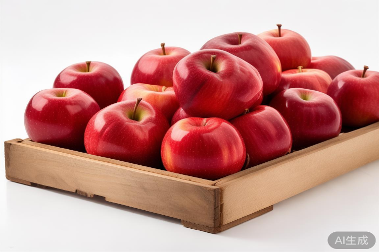
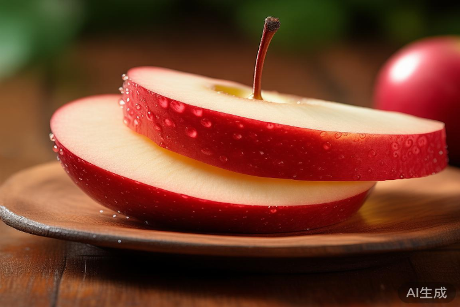

山东烟台红富士苹果：从田间到餐桌的甜蜜旅程
#水果
#产地直供
#健康生活
山东烟台，地处北纬37°黄金水果带，四季分明，光照充足，这里出产的红富士苹果以个大、色艳、味甜、汁多而闻名全国。
独特的丘陵地形和沙质土壤，为苹果树提供了极佳的生长环境。这里昼夜温差大，有利于糖分积累，每一颗苹果都凝聚着大自然的馈赠。果农们坚持传统种植方式，不催熟，不打蜡，让苹果自然生长，保留最纯正的果香和口感。
烟台红富士苹果果园实景
从采摘到包装，每一颗苹果都经过严格筛选。只有色泽鲜艳、果形端正、糖度达标的苹果才能进入市场。先进的冷链物流体系，保证苹果从树上摘下后，最短时间内就能送到消费者手中，保持最新鲜的状态。

刚采摘好的优质红富士苹果
切开一颗成熟的红富士，清脆的声音让人愉悦，果肉洁白细密，果汁丰富，甜中带微酸，口感极佳。富含多种维生素和膳食纤维，每天一颗，健康生活从这里开始。
百年苹果栽培历史，造就了烟台苹果的优良品质。如今，这颗小小的苹果不仅是当地的支柱产业，更是走向全国的名片。从田间到餐桌，每一步都凝聚着果农的辛勤汗水，也承载着人们对美好生活的向往。

果肉细腻多汁的红富士切面
如果您也想品尝这份来自渤海湾的甜蜜，不妨试试正宗的烟台红富士，相信那一口清爽甘甜，一定会让您回味无穷。